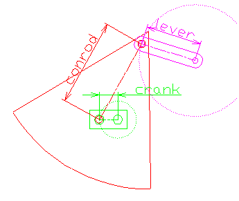

リンク機構シミュレータ「Links」（Win版）のWeb移植版の使い方です。 もともとのWin版の取扱説明書を土台に、 Web版での実際の操作・仕様に合わせて書き直しています。用語や考え方はWin版を踏襲していますが、 操作方法や一部機能はブラウザ向けに変更されています（詳しくは末尾の「Win版との違い」参照）。
.links/DXFファイルはお使いのブラウザ内だけで処理されます。どこにもアップロードされません。
かわさきロボット競技大会向けのリンク機構シミュレータ・設計支援ソフトです。スライダリンクやヘッケンリンクなどの機構をシミュレートし、 脚（接地曲線）の上下動を抑える最適化計算や、DXF/AutoCADとの連携ができます。

説明の都合上、以下のように名前を付けています。
レバー長さを0に設定するとスライダリンクとして扱われます。この場合レバーの座標がスライダの座標になります。
脚前幅・脚後幅で最適化曲線の前後幅を指定できます（値を大きくすると短くなります）。脚幅ピッチで曲線の精度（線分の細かさ）を指定できます。
画面上部のアイコンをクリックすると各機能を呼び出せます。アイコンにマウスを乗せると機能名がツールチップで表示され、 下部のヘルプバーには詳しい説明が表示されます（スマホ等では長押し）。
.links形式（JSON）のファイルを読み書きできます。右側のアイコンでダークモードのON/OFFを切替できます（既定はライトモード。選択内容は次回訪問時も保持されます）。 工具アイコンの「ベータ版機能表示」をONにすると、アークスライダ・デュアルスライダ・ヴァーティカル・ダブルクランクなどの実験的モードと、 「AutoCADコマンドをコピー」ボタンが専用の行に表示されます（この表示状態は保存されず、ページを開き直すと毎回非表示に戻ります）。
パラメータを変更すると、その場でリンクの動きに反映されます。
脚の接地部分の軌道を計算し、上下動をなるべく抑えるように最適化した曲線を表示します。最適化曲線は折れ線（直線の連続）で近似しており、 脚幅ピッチで精度を調整できます。あくまで最適化であり、必ずしも上下動が0になるわけではありません。
最適化曲線とDXF読込図面は同時に表示できないため、「DXF表示」アイコンで切り替えます。
「DXF読込」アイコンからDXFファイルを読み込めます。Win版はAutoCAD R13/LT95形式のポリラインのみに対応していましたが、 Web版はvendorしているdxfライブラリ（MIT License）により、 LWPOLYLINEやDXF2000形式のファイルにも対応しています。 クランク・レバー・コンロッド・バックグラウンドとして読み込む際は、図面上の原点と図形の中心点を合わせて下さい。
「DXFファイルを出力」アイコンでDXFファイルとして保存、「AutoCADコマンドをコピー」ボタン（ベータ版機能表示ON時）で AutoCAD用のコマンド文字列をクリップボードにコピーできます。
「動画出力」アイコンをクリックすると、現在の描画範囲をそのまま1回転分録画し、WebM形式の動画ファイルとしてダウンロードします。 Win版の連番ビットマップ＋外部ソフトでのGIFアニメ作成に代わり、ブラウザの録画機能（MediaRecorder）でその場で1ファイルに書き出します。
最適化曲線の両端部の軌道を表示します。DXF表示中は対象がないためボタンが無効化されます。 シフトX・Yを両方とも0にすると、従来の軌道非表示と同等になります。
| 項目 | Win版 | Web版 |
|---|---|---|
| 設定の保存 | config.ini | ブラウザのlocalStorage |
| ファイル関連付け | Association.batで拡張子登録 | 該当なし（ブラウザの「開く」/ドラッグ＆ドロップのみ） |
| DXF読込対応形式 | R13/LT95のポリライン中心 | LWPOLYLINE・DXF2000にも対応 |
| アニメーション出力 | 連番ビットマップ→外部ソフトでGIF化 | WebM動画を直接1ファイル出力 |
| 背景の明るさ | スライダーで自由指定 | ダークモードON/OFFの2択に統合 |
| ヘルプ表示 | 電球アイコンでヘルプモード切替 | アイコンにマウスを乗せると常時ツールチップ＋ヘルプバー表示 |